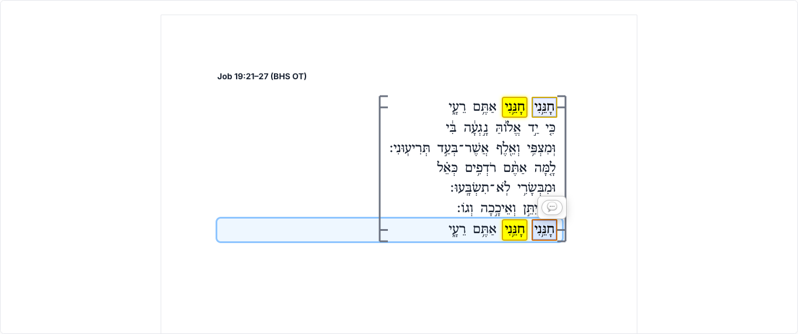
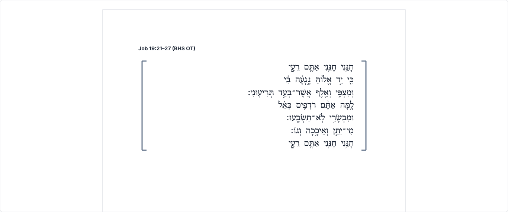
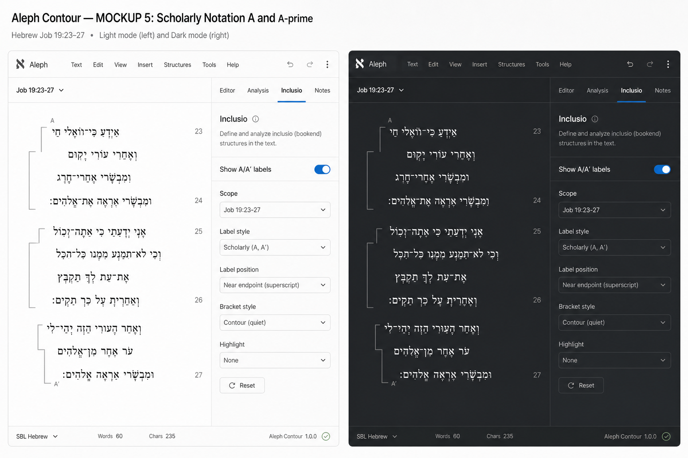

Inclusio implementation comparison
Production (previous word-rail)

Local (unit-frame v2)

- Unit bounds from clause lines, not per-word boxes
- Margin rails offset 28px+ outward; no overlap with Hebrew
- Top/bottom caps only — midline prongs removed
- No persistent blue word selection boxes in editor
Approved mockup

Implementation
- Matches: margin-only frames, nested outward offset, muted palette, document-first Hebrew
- Differs: caps are short line segments (not full corner glyphs) for SVG simplicity
- Why: segments scale cleanly at all zoom levels and export identically to screen